Hello, my name is David. This is where I put my best work. Below is a small sample of the best I've done, if you're in a hurry.
Animation
Video Game
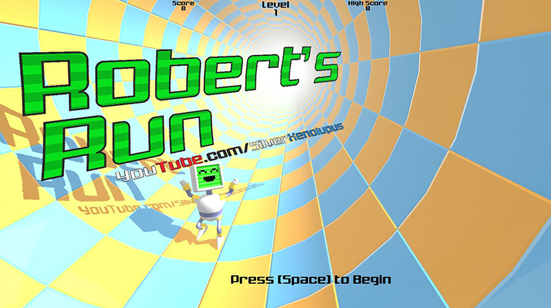
Hello, my name is David. This is where I put my best work. Below is a small sample of the best I've done, if you're in a hurry.
This is where I put my highest quality animations. All of them are made from scratch.
This is an animation I made the first week of summer break. I had just come up with the design for the main character of the video game I was planning to make for my capstone, and I wanted to make a mysterious feeling animation about him. The video game will give this character a back story, and may clear up any confusion about what's going on.
I made this last year for the intro to my school's news channel. It's a parody of all the Nintendo system logos with the major names replaced with Daybreak.
After I made The Infiltrator, I wanted to make a more light hearted animation. Using Blender's Freestyle and a crumpled up paper, I was able to make the animation look almost hand drawn. I would like to one day make a longer animation like this.
There's no sound in this video. At the beginning of the school year, I was interested in motion tracking. I've done this before, but this is my best example. I used the character model for Philip the Fox from the game I made for the Ludum Dare 30.
At the end of last year, I wanted to create a persona for myself. I animated him, and wanted to make it silly and a little bit cheesy.
This is where I put my best 2D and 3D stationary graphical creations.
This is a hot dog ad I made at the beginning of the year. Our class had to choose to design something from a list of ideas, and I chose a hot dog ad.
One of the assignments we had was to design 25 simple graphics to represent a category of some kind. Mine was animation. (Click to show the whole thing)
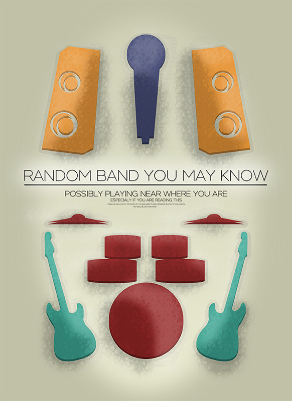Last year, as a side project, our class was told to design a concert poster. This is the one I made.
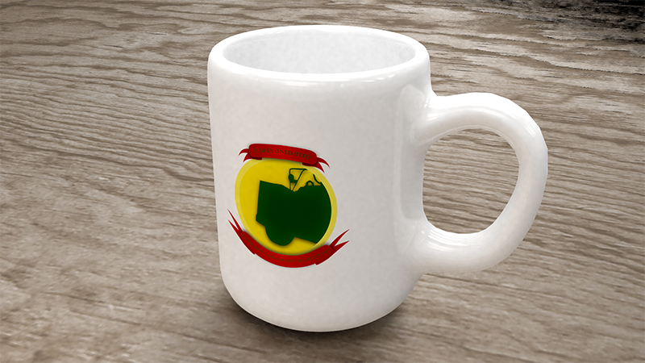We had to design a list of products for a fictional company including a pen and a notepad. This mug is the best looking one I made.
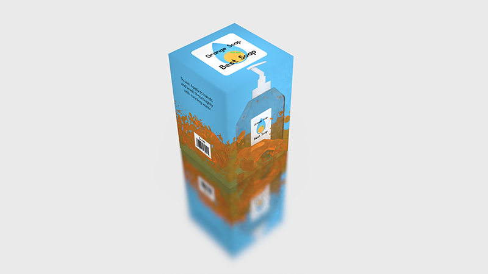This is a soap box I had to design for another fictional company we had to make.
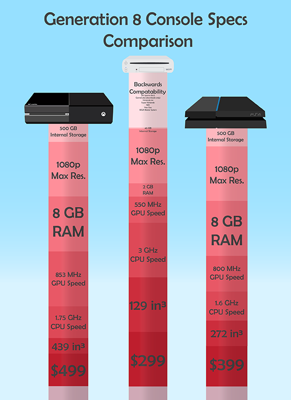This is an infographic I made last year comparing the Wii U, Xbox One, and PS4.
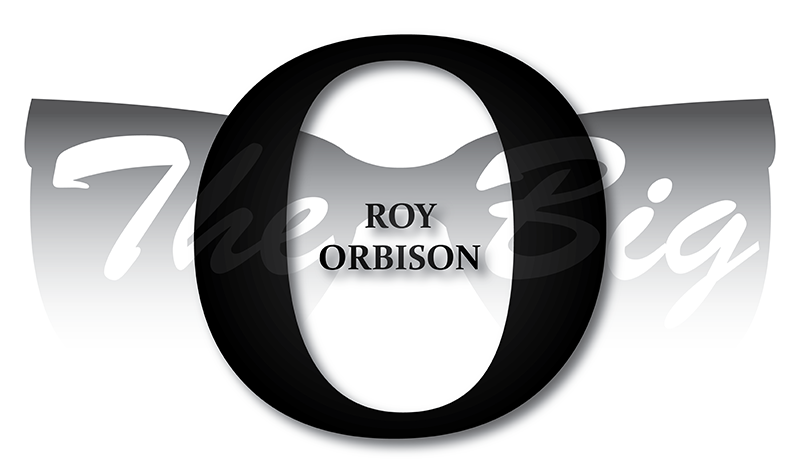This is a poster I had to design to commemorate Roy Orbison.
This is where I put the video games I've made. The images are links to the actual game.
This is the game I made for the 48 hour competition of Ludum Dare 31. This year I got 83rd place in graphics(worse by 21 places), but 59th place in fun(which is much more important). You play as a robot running down a tube avoiding obstacles and collecting burgers.
This is the game I made for the 48 hour competition of Ludum Dare 30. I got 62nd place in graphics. The player character is a fox who is trying to escape a strange world he discovered by jumping into a portal.
This is a game I made last year as a joke. There's an admin at our school who rides around in a cart, and is notorious for taking peoples hats.
This is a game I made in a week, because I wanted to try to make a horror game. You have to turn on the lights in a large room before ghosts come and kill you. It's worth playing, but it can get repetitive.
This is a game I made last year to see if I could make a mobile game. You jump to avoid pits, spikes, and collect coins. It is available for download for android devices.
This is a game I started making at the beginning of sophomore year's summer. You have a few things that you can place in a large world. I stopped working on it, but it's still playable.
This year, I am working on my capstone. It is going to be a platformer / puzzlesolver game with a deep and involving story that doesn't drag you down into bordom with cutscenes. Right now, I am working on a demo, so that I can program the main game-play mechanics and maybe get a following. Right now I'm working on the animations and basic platforming controls of the player character. I don't have a playable demo yet, like I had planned, but I do have some screen shots of what it will look like when I get it to build correctly.
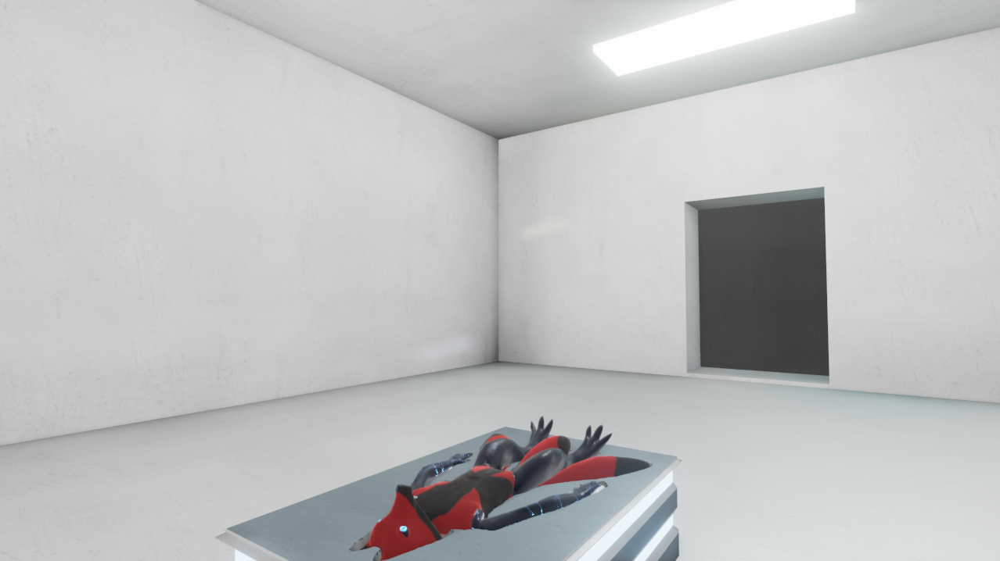 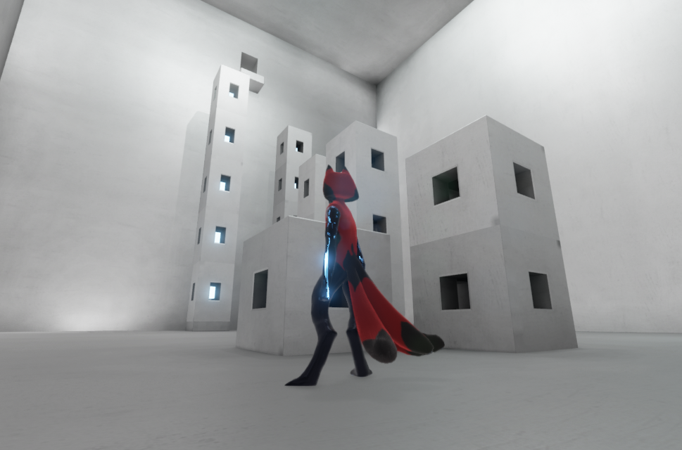 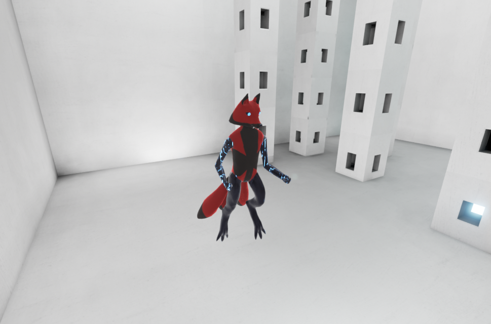 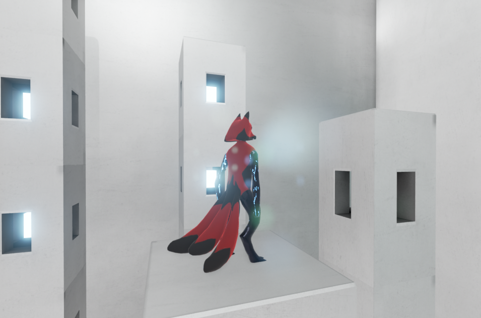 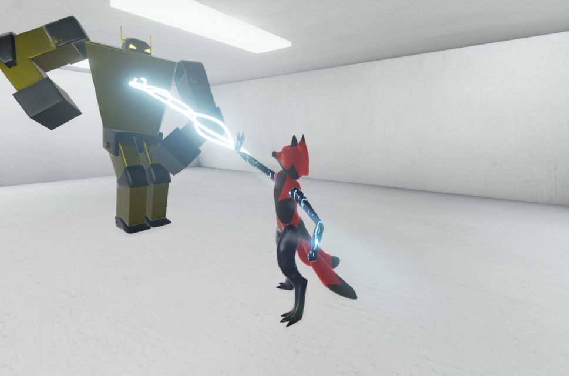Contact and or Hire me!
Xenolupus@gmail.com